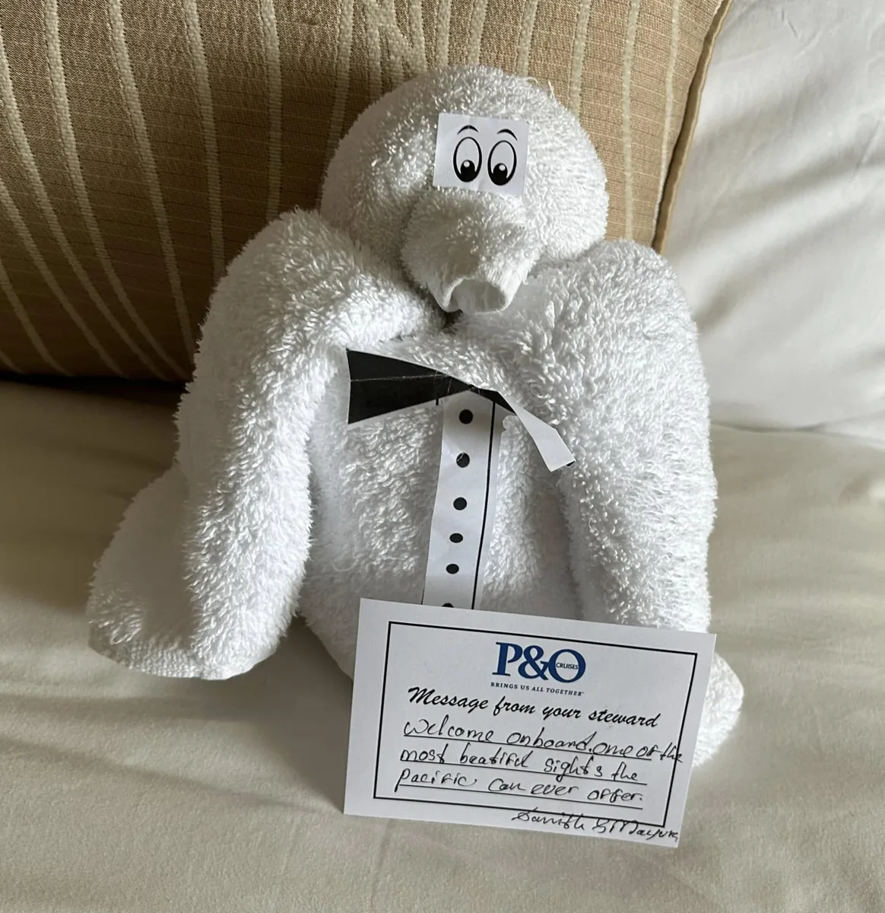
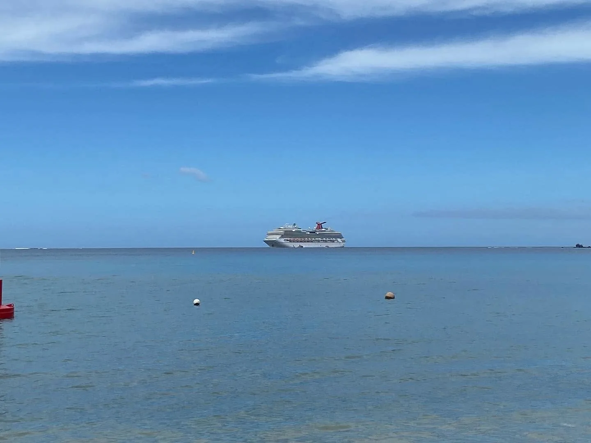

Darling Harbour
Good food, waterfront views and one very good Sydney sunset.
Cruises, long weekends and the bits that made each trip memorable.
Good food, waterfront views and one very good Sydney sunset.

Fresh from getting married in Wollongong, a cruise to celebrate.

South Pacific colour, sea days and the sort of shipboard details that stick in the memory.

Sydney → Eden → Sydney, then New Zealand and home again. Eden included Sydney-to-Hobart storm drama.

Fiordland, Milford Sound, Dunedin and a cruise where the scenery did most of the talking.

Carnival Splendor, a first wedding anniversary and a trip as much about the ship as the destination.
A mix of cruise memories, future itineraries and the photos that make the trips feel real.